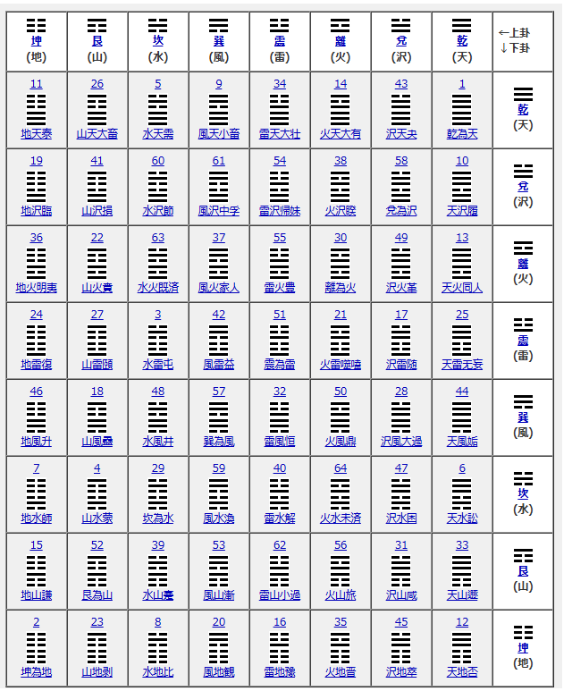

コインを6回投げて、易の卦を作ります。

八卦マトリクス（行＝上卦／列＝下卦）
地 山 水 風 雷 火 沢 天
天 11 地天泰 26 山天大畜 5 水天需 9 風天小畜 34 雷天大壮 14 火天大有 43 沢天夬 1 乾為天
沢 19 地沢臨 41 山沢損 60 水沢節 61 風沢中孚 54 雷沢帰妹 38 火沢睽 58 兌為沢 10 天沢履
火 36 地火明夷 22 山火賁 63 水火既済 37 風火家人 55 雷火豊 30 離為火 49 沢火革 13 天火同人
雷 24 地雷復 27 山雷頤 3 水雷屯 42 風雷益 51 震為雷 21 火雷噬嗑 17 沢雷随 25 天雷无妄
風 46 地風升 18 山風蠱 48 水風井 57 巽為風 32 雷風恒 50 火風鼎 28 沢風大過 44 天風姤
水 7 地水師 4 山水蒙 29 坎為水 59 風水渙 40 雷水解 64 火水未済 47 沢水困 6 天水訟
山 15 地山謙 52 艮為山 39 水山蹇 53 風山漸 62 雷山小過 56 火山旅 31 沢山咸 33 天山遯
地 2 坤為地 23 山地剥 8 水地比 20 風地観 16 雷地豫 35 火地晋 45 沢地萃 12 天地否
プロンプト ききたいこと：～～ために、どうすればいいか？ ほんけ： こう このけ： うらけ：陽ーーー（〇） 陰ー空ー（ーー）
64卦の解説はこちら（易経ネット）